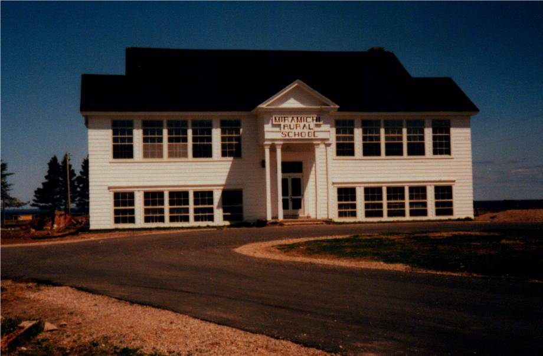
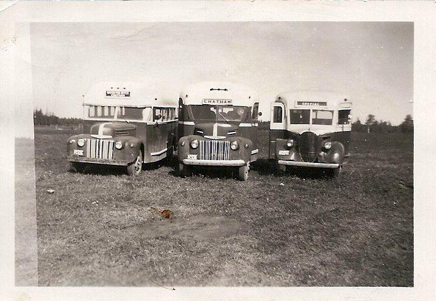

First in its Class:
Miramichi Rural High School:

EDITOR
Donald E. M Glendenning
Charlottetown, PEI
2019
The Miramichi Rural High School deserves its own book,
but this is not it;
instead, you are reading items from memorabilia
collected by Don Glendenning, a former student.
Before his file goes to the New Brunswick Archives,
he pulled together this booklet as a way of sharing the school’s story.
It is the editor’s hope that these notes serve as a thank you to the school’s founders and as a record of its early years.
SECTIONS
Introduction
Rev. Douglas Smith by Twila Buttimer
The First Rural School by A.T. Patstone
Misc Notes
Trustees
Staff
Students
Photographs
Sources
MIRAMICHI RURAL HIGH SCHOOL:
FIRST IN ITS CLASS
INNTRODUCTION/FOREWORD
A brief account of how the arrival of Rev. Harvey Douglas Smith in Bay du Vin led to the founding of New Brunswick’s first rural high school.
THE COMMUNITY
EARLY EDUCATION
Soon after getting settled in their new community, settler’s thoughts turned to education. The first home-school in Black River was convened in a barn belonging to Archibald Cameron, Sr.; the first school in Bay du Vin was operated at the home of James Graham near Buckley’s Bridge, The task of teaching usually fell to most educated person in the community and classes were usually held in homes. Records show that, at least by 1817, a qualified teacher, Hugh MacDougald, had been hired to provide instruction
In 1825, residents of Black River petitioned successfully for a school which, as I understand it, was erected near the lane now leading to St. Stephen's Church. This school appears to have served all of Black River and as far east as lower Bay du Vin, and included trustees from both communities.
Although a closer examination of records may show otherwise, History of Bay du Vin (1) reports a school at the mouth of the Bay du Vin River by 1830, perhaps the Cameron School and a school in Bay side by 1845, and the Little Branch School around 1855. MacDougall (2) reports that the Little Branch School burned shortly after construction but was soon replaced.
Each District had a one room school handling all grades usually up to Grade 8 or perhaps Grade 9. Very few students in the area went beyond the studies available at their local school. Those who were lucky, attended high school classes in Loggieville or Chatham and boarded with relatives or friends. At the time it was possible for students to write Normal school entrance exams and be admitted directly to Normal school after Grade 9. But, as the next section points out, change was afoot within the Department of Education, change that awaite a communit looking for a partner
REV. DOULAS SMITH
The Rev. Douglas Smith took up his duties at St. John’s Anglican Church, Bay du Vin, in August of 1937. Born in Saint John, NB on January 10, 1912, he graduated from King’s College, Halifax in 1934 with a BA. degree. Although ordained a Deacon t St Paul’s Anglican Church in St. John 1n 1936, Rev. Smith served as a junior Master at Rothsay Collegiate during 1936-37. His official duties began at St. John the Evangelist Church in Bay du Vin on August 24, 1937. Recognizing the needs of the area, later that year. He started classes “in his own study at the Rectory”; the next year he hired a teacher to help him. This event marked the beginning of the Miramichi Rural High School
Information about the Rev. Douglas Smith and his contribution to education in the Miramichi was the subject of a four-part article in the Archives Corner. Published by the Fredericton diocesan Synod and included in the next session.
THE FIRST RURAL HIGH SCHOOL
Rev. Smith’s vision of a high school Education for all young people in New Brunswick was share by Fletcher Peacock, Chief Superintendent of Education and W. K. Tibert, Director of Vocational Education. They soon recruited Mr. A. T. Patstone as the first principal. Mr. Patstones’s paper on the founding of the first rural High School is included in a later section.
MIRAMICHI RURAL IN SERVICE
OFFICIAL OPENING
Classes were relocated to the new building, I believe, in January, 1940; a formal opening was held in October.
Photo of program
Photo of district
“During this time, another had joined forces with Mr. Smith, Fred A. Fowlie of Fowlie’s Mills. Dreams became visions. Visions became reality. An interview was arranged with Educational authorities at Fredericton”. There was a plea put forth for assistance and encouragement to promote a larger school idea for the areas of Black River and Bay du Vin
The officials were found most sympathetic. The delegation came back encouraged and carried the plan to the people. As a result, the six districts of Black River Bridge, Victoria. Little Branch, Bay Side, Bay du Vin River and Bay du Vin Beach decided to consolidate and join forces to establish the first Rural High School of the Province.
A temporary School Board was appointed to carry on the construction. Rev. D. Smith was the chairman, A.M. Cameron, vice–chairman, Harrison T. Smith, treasurer, Ian MacNaughton, secretary, Woodbury Williston, Bertrand Williston and Jack Godfrey as additional members”.
Classes proved so popular that they had to relocate first to the church basement and later to the church hall across the road. Smith also hired two additional teachers, Miss Elizabeth Stevenson and Mrs. Dorothy Claytonburg.
On the opening of classes in September, 1939, still in Bay du vin, numbers had grown to 67 students, a Principal, Mr. A. T. Patstone and teachers, Miss Jean Barnes in Home Economics, and Miss Beryl MacAloney in academic subjects.
The program for the formal opening on Tuesday, October 1, 1940, identified the following as features of the school:
Air-conditioned heating
Pressure water system
Green glare-proof Boards
Modern plumbing
Electric lights, Delco Plant
The new school cost, as I recall, $13,000 and opened in January 1940. On a personal note, my first visit to MRHS was late in the fall of 1939 when George Watling and biked down to see it. It was an impressive building for a rural area. As the photo above shows, it was two-story with two classrooms on each level at the front and an auditorium on the second floor at the back. At the back on the lower floor were the principal’s office, boys’ and girls’ washrooms and the furnace room.
MRHS had electric lights, a 32-volt system, operated from a bank of glass-encased batteries with a small gasoline engine switching on and off automatically to charge the batteries. It also had a coal-fired furnace. A very tall flagpole stood in the front yard by the driveway. It looked like a ship’s mast and took a team of horses and special rigging to erect.
LOGO
The following logos were found among the writer’s mementoes but he is not sure which was the original.


Programs
In the program for the opening of the new school, the aims of the new Miramichi Rural High School were given as:
To provide a satisfactory type of education, designed to meet the demands of the community and which will best fill the requirements of the individual
To foster and implant those habits of co-operation and economic practices necessary for complete living and for the formation and development of character.
To foster agricultural projects and to lend to the rural social activities of the community.
In addition to the usual subjects, offerings included home economics, shop and music; in fact, an orchestra had been formed by the fall of 1940. In the early years, students were expected to plant school gardens. It seems to me that we were paired and each pair had a small plot. Come fall, the vegetables were canned and kept in the closet under the stairs
Educational programs for adults included weaving, adult discussion groups, music and games. Readers are encouraged to read the paper, undated, by A. T. Patstone and included as Appendix 1.
Transportation
Attendance was not limited to Anglicans or to local students. Students from Black River walked or biked to Bay du Vin during good weather and traveled by horse and sled in the winter; others boarded in Bay du Vin during the bad weather. Norman Glendenning recalls transporting students to Bay du Vin by horse and sled and even to Bay Side after the new school was built. During the day, his horse was stabled either at Goymer Williston’s or Harrison Smith’s barn; Norman always carried some hay and oats for the horse while it was stabled and had to tend to the animals during school break.
The first motor transport appears to have been provided by Goymer Williston in the back of a 2-3-ton truck with a box on the back
This was followed in the fall of 1940 by the bus shown below which Eddie Godfrey recalls as a one and one-half ton Fargo chassis purchased from the W.S. Loggie Co. The body, I believe, was fabricated by the Fowlie Brothers of Little Branch. When the Godfrey Bros. purchased their second bus, the one pictured above was sold to Gordon Dick of Upper Napan and used to transport students from Napan and Point aux Carr to school in Chatham. Those communities were not part of the MRHS school district

The first school bus serving the
Miramichi Rural High School
(Photo courtesy Myrtle (Dick) Allen
Their second bus, purchased in 1944 at St. John, NB was a commercial bus khaki colour (a wartime colour); the third bus was a 21/2-ton Fargo, blue and white, built in Levis, P,Q; their final bus was a 1947 International built in Saint John. The Godfrey Bros. ended their business in 1955 and the remaining buses were sold.
Later the contract for school transportation shifted to Tom Adams. Della (Adams) O’Neil thinks that her father may have built the body on the smaller and older bus himself.

The photo above, from the Glendenning Collection, shows one of the Adams busses stopped for pick-up at the Little Branch corner.

Adams fleet of school buses courtesy of Della (Adams) O’Neil
TRUSTEES
Fred A. Fowlie, 1938-
STAFF
1937
Rev. Douglas Smith
1938
Rev. Douglas Smith
1939
A. T. Patstone
1940
A. T. Patstone
1941
A. T. Patstone
1942
1943
Perley Quayle
1944
Perley Quayle
1945
Perley Quayle
1946
Rev. Smith
1947
Rev Smith
1948
Brown
STUDENTS
REFERENCES
Anglican Church Women, Looking Back: A History of Bay du Vin, New Brunswick,Walco Print and Litho Ltd, 1978
MacDougall, A. W., Black River and its First Settlers, 1935
MRHS, Formal Opening, Background notes and programme distributed to attendees at
Formal Opening on October 1, 1940
Miramichi Weekend, Miramichi Rural’s First Graduating Class, Miramichi Weekend: July 4, 1980, p 3
Miramichi Weekend, Miramichi Rural’s founder “man of vision beyond his calling”, July 4, 1980, p 3
MRHS, Maroon and Grey, Year Book, 1954-1955, In possession of the author
MRHS, Graduates Reunion, June 28, 1980, In possession of author
Miramichi Rural School, Official Opening, March 31, 1987, in possession of author
Patstone, A. t., The First Rural High School, the author has two copies, one unpublished given to him by Mr. Patstone and the other a copy of page 12 and 13 from a source unknown. (The articles are the same except for 3 photos, one of A.T. Patstone and two of the MRHS).
He Rev. Harvey Douglas Smith – Making a Difference on the Miramichi, Newsletter, Fredericton Diocese,